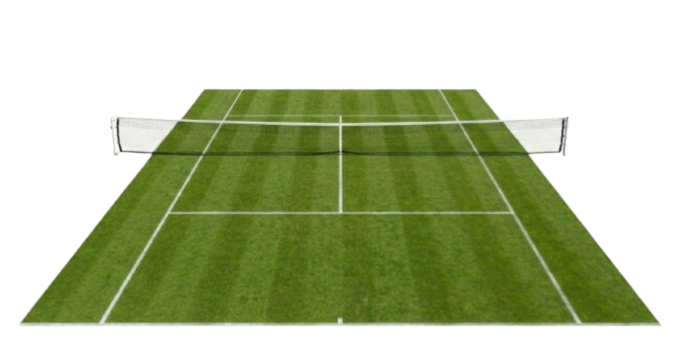
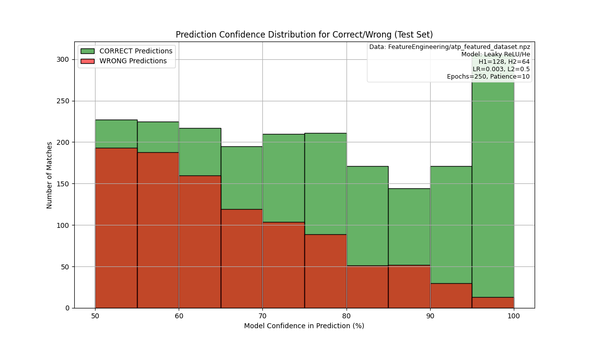

A neural network built from scratch with NumPy that beat IBM's SlamTracker at Wimbledon 2025. Select two players, pick a surface, and get an instant prediction.
From player names to win probability in 4 steps — no TensorFlow, no PyTorch, just NumPy.
Extract 37 features from 195K+ matches — win rates, serve stats, head-to-head, surface form, and rankings across 57 years of ATP data.
Design a 37→128→64→1 network with He parameter initialization, Leaky ReLU activations, and L2 regularization — all implemented from scratch.
Forward propagation, backpropagation, binary cross-entropy cost, and Adam optimizer — built layer by layer with only NumPy.
Forward propagation through the trained network with Sigmoid output to produce a win probability for any two players on any surface.
Select two ATP players and a surface — our model computes 37 features automatically and generates a prediction.
Round-by-round prediction accuracy comparison across all 127 matches.
| Round | My Model | IBM SlamTracker | Result | ||
|---|---|---|---|---|---|
| Round 1 | 38/64 | 36/64 | +2 | ||
| Round 2 | 21/32 | 22/32 | -1 | ||
| Round 3 | 12/16 | 9/16 | +3 | ||
| Round 4 | 8/8 | 8/8 | Tie | ||
| Quarter Finals | 2/4 | 4/4 | -2 | ||
| Semi Finals | 2/2 | 2/2 | Tie | ||
| Final | 1/1 | 1/1 | Tie |
This isn't a production-ready prediction system — it's a learning journey built from the ground up.
I built this entire neural network from scratch using only NumPy — no TensorFlow, no PyTorch, no shortcuts. The goal was never to build the "best" tennis predictor, but to deeply understand how neural networks actually work under the hood: forward propagation, backpropagation, gradient descent, and everything in between.
The model achieves 67.4% test accuracy and outperformed IBM's SlamTracker at Wimbledon 2025 by +1.6%. But numbers only tell part of the story — and I believe in being transparent about where this model falls short.
The model is good at ranking who's more likely to win, but tends to be overconfident in its probability estimates — a known issue called "uncalibrated probability."
The model struggles with Djokovic specifically (~50% error rate). At 36, his stats suggest decline — yet he won 3 Grand Slams in 2023. Some things numbers can't fully capture.
Predicting 2025 matches with data ending in 2024 means emerging players and recent form shifts aren't fully reflected in the model's knowledge.
Accuracy drops in early rounds where qualifiers with limited match history face top seeds — less data simply means less reliable predictions.
I dive deeper into all of these challenges — and potential solutions — in my project presentation. If you're curious about the technical details or how this model could be improved, I'd genuinely appreciate you checking it out.
📽️ View Full PresentationEverything built from scratch — no ML frameworks used.

Read the full technical report covering data pipeline, feature engineering, model architecture, training methodology, anti-leakage measures, and Wimbledon 2025 benchmark results.
📥 Download Technical Report (PDF)